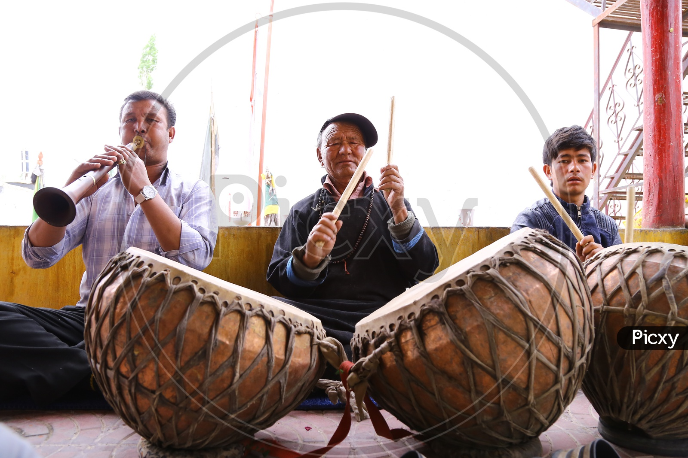
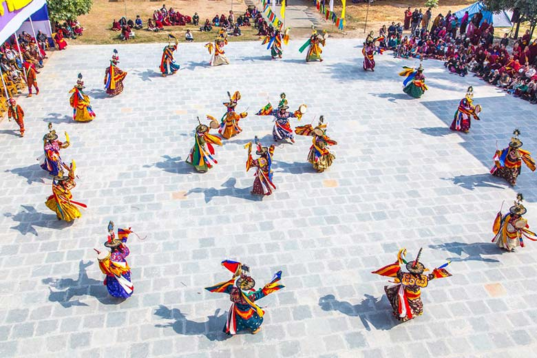
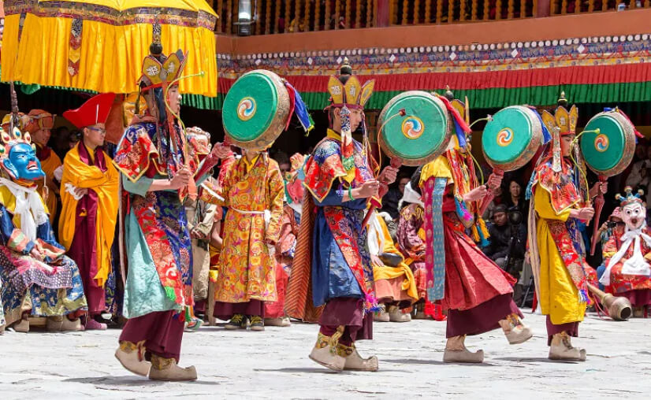
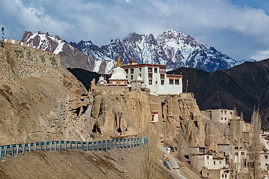
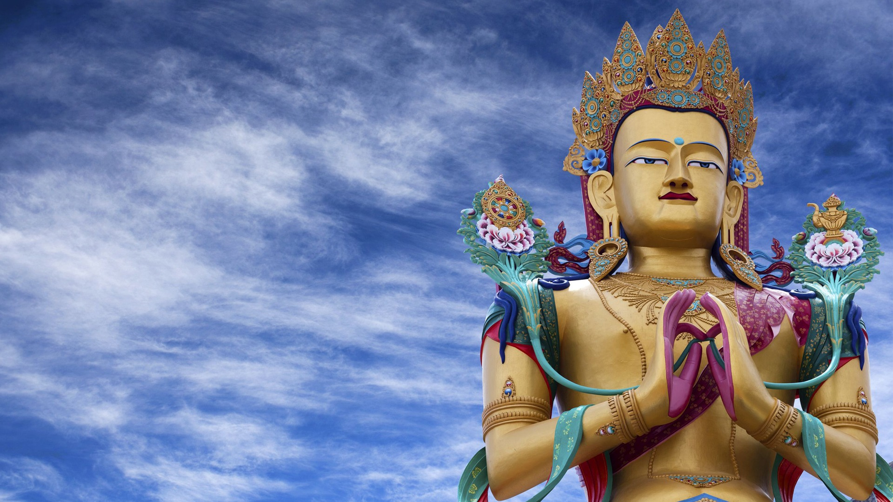

Culture of ladakh
The culture of Ladakh refers to the traditional customs, belief systems, and political systems that are followed by Ladakhi people in India. The languages, religions, dance, music, architecture, food, and customs of the Ladakh region are similar to neighboring Tibet. Ladakhi is the traditional language of Ladakh. The popular dances in Ladakh include the khatok chenmo, cham, etc. The people of Ladakh also celebrate several festivals throughout the year, some of the most famous are Hemis Tsechu and Losar.
MUSIC
 The traditional music of Ladakh includes instruments like linyu (flute), damnyan (stringed instrument) pivang, khakong, (sitar) daph (dafli) daman, surna, and piwang (shehnai and drum). Chanting of mantras in Sanskrit and the Tibetan language plays an important role in Ladakhi music. Folk music is an integral part of Ladakh's culture. Music is often inspired by the surrounding physical features. Morup Namgyal is an avid preservationist and during his 30-year career working at Ladakh's only radio station (All India Radio, Leh) he recorded a vast archive of Ladakhi folk songs.
DANCE
 The popular dances in Ladakh include the Khatok Chenmo which is headed by a respectable family member, Shondol,Some other dance forms include Kompa Tsum-tsak Jabro Chaams: Chabs-Skyan Tses Raldi Tses and Alley Yaato.The music of Ladakhi monastic festivals, like various forms of Tibetan music, often involves chanting as an integral part of the religion. Traditionally, 360 variants of dances existed in the early times, but today only a few are preserved. These chants are complex, often recitations of sacred texts and manuscripts or in celebration of different festivals. Some forms of dance narrate the story of the fight between good and evil, ending with the eventual victory of the former.
CUISINE
 Ladakhi food is much common as Tibetan food, the most prominent dishes being thukpa, a type of noodle soup and tsampa, known in Ladakhi as ngampe, which is a type of roasted barley flour. Strictly Ladakhi dishes include skyu and chutagi, both heavy and rich soup pasta dishes, skyu being made with root vegetables and meat, and chutagi with leafy greens and vegetables. As Ladakh tourism and modernization increased in Ladakh, foods from the plains of India are becoming more common.
Ladakhi food is much common as Tibetan food, the most prominent dishes being thukpa, a type of noodle soup and tsampa, known in Ladakhi as ngampe, which is a type of roasted barley flour. Strictly Ladakhi dishes include skyu and chutagi, both heavy and rich soup pasta dishes, skyu being made with root vegetables and meat, and chutagi with leafy greens and vegetables. As Ladakh tourism and modernization increased in Ladakh, foods from the plains of India are becoming more common.
FESTIVAL-EVENT
 Ladakh has several festivals throughout the year, including Hemis Tsechu and Losar. Ladakh's festivals comprise mask dances performed by people, games such as camel races, river rafting and archery, regional music and dance performances, thangka exhibitions, etc. People of Ladakh also celebrate several festivals throughout the year, some of the most famous ones are Hemis Tsechu and Saka Dawa. A lot of their time is also spent in making stone jewellery, woolen clothes, and mural paintings on the walls of the monasteries. Weaving is considered as an essential part of traditional life in eastern Ladakh. Some festivals of Ladakh are:
Cultural centers
 Buddhist monasteries are often situated on an isolated hillock in the vicinity of villages. These monasteries provide the focus for the faith of the religious Buddhist people.[31] Some monasteries and cultural centers of Ladakh are:Ladakh Religion
The predominant religion in Ladakh is the Tibetan form of Buddhism, although Islamic influences are found from the Kashmir Valley as far as Kargil, and there are some Christian families in Leh. The Tibetan influence in Ladakh is manifest: all religious books and prayers are in the Tibetan language, the monastic orders in the gompas are those developed in Tibet and the gompa artwork is clearly Tibetan in origin. Even the architectural design of Leh Palace is very similar to that of Lhasa's Potala Palace. Tibetan Buddhism is built on an earlier Tibetan religion - Bon or Bon-Shamanism - and it incorporated many of Bon's demons and gods. It similarly incorporated many of the gods in the Hindu pantheon, transforming them into Bodhisattavas or different incarnations or manifestations of various personalities. The walls of Ladakh's gompas are covered with illustrations of the Lord Buddha, his manifestations and followers, and the incorporated Bon and Hindu guardian deities in their various incarnations. It all makes for colourful and varied wall murals in every Ladakh gompa. The monasteries follow each of the two main sects of Buddhism that developed in Tibet: the Karyu pa or red-hat sect and the Gelug pa or yellow-hat sect. The Dalai Lama, believed to be a reincarnation of the Boddhisattva Avalokitesvara, is the head of the Gelug-pa sect. The gompas represent the monastic side of Buddhism, or lamaism. The lamaist side of Buddhism, requiring lon tation, contrasts with the everyday practice of Buddhism by Ladakhi lay people. For Ladakhis, religion is a daily affair with visible rituals that are frequently observed. These include spinning prayer wheels, making pilgrimages to gompas, chortens, mani walls and holy tombs, chanting mantras and reciting prayers in the area of the home set aside as a chapel.